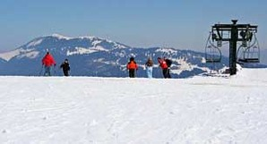
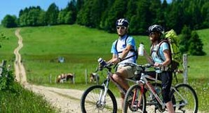
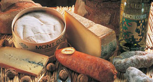
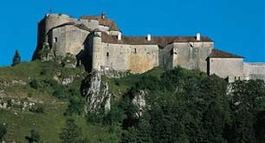

Wat te zien en doen
-
Ontdek de natuurlandschappen met rivieren, meren, bergen, watervallen, rivieren, grotten... van Franche-Comté !
-

In deze rubriek vindt u alle informatie die u nodig hebt om uw wintervakantie in het Juramassief of op de berg Ballon d'Alsace voor te bereiden: oorden voor Noords of alpineskiën, skischolen enz.
-

Bent u op zoek naar ideeën voor een trektocht, mountainbike of fietsroute, of naar een fietsverhuurbedrijf of zwemgelegenheid? In deze rubriek kunt u kiezen uit een groot aantal zomerse activiteiten in de Franche-Comté.
-
In deze rubriek vindt u de adressen van de meest uiteenlopende restaurants: wereldkeuken, streekgerechten, Franse keuken... Ook 's avonds is er van alles te beleven: theatervoorstellingen, bioscopen, discotheken. U zult haast niet weten wat te kiezen!
-

Culinaire ontdekkingen zijn onontkoombaar tijdens uw bezoek aan deze regio. Er zijn veel beroemde producten te vinden: worsten van Morteau, Comté en Morbierkaas, beroemde Jurawijnen. Maar er zijn nog meer rijkdommen van deze bodem te ontdekken: absint, Pontarlier, honing...
-

De Franche-Comté, een streek met een rijke cultuur en een kloppend hart. De bouwkundige verscheidenheid in steden als Dole en Arbois en het talent van zijn ontwerpers zijn een reis waard.